Пошаговая инструкция по приготовлению
1. Приготовьте соус бешамель. Для этого есть два пути приготовления основы соуса – ру.
Первый вариант: растопить сливочное масло (80-100 г) и добавить муку (80-100 г),
прожарить все вместе 3 минуты, как это делает большинство домашних поваров по всему миру.
Этот способ достаточно простой в исполнении. Или попробовать свои силы во втором варианте.
Сначала подрумяньте муку в сухом сотейнике при постоянном помешивании в течение 1 минуты до появления характерного запаха.
Затем введите сливочное масло и все активно помешивайте до получения однородной и кашеобразной массы.
Второй способ может дать больше вкуса вашему соусу, но есть вероятность, что по неопытности мука у вас может пригореть.
Так что выбирайте вариант сами.
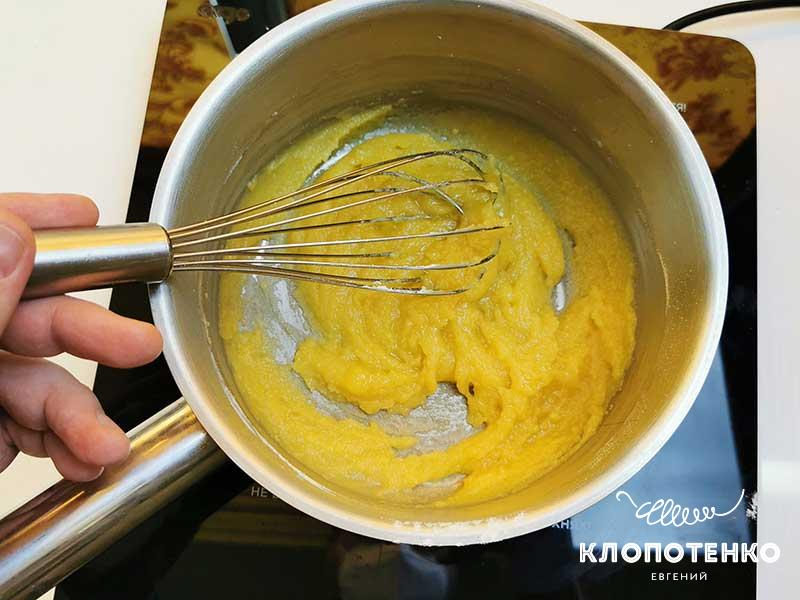
2. Основа соуса ру готова и теперь можно приступать к следующему шагу.
Тонкой струйкой влейте все молоко (0,8-1 л) при постоянном помешивании, чтобы исключить появление комочков.
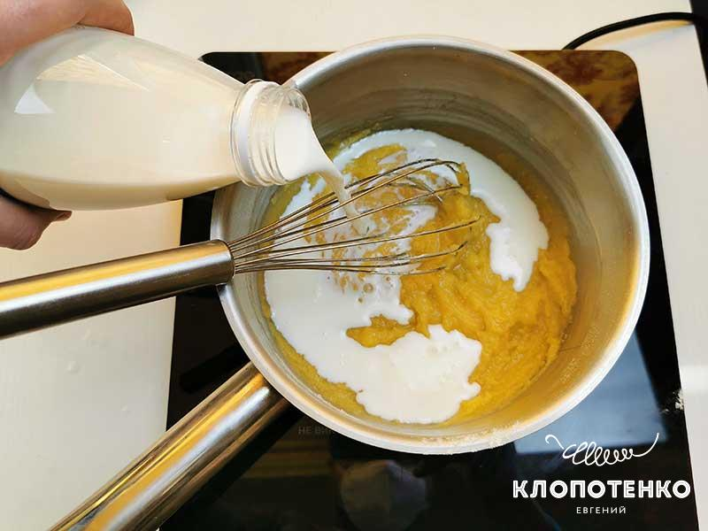
3. Заварите соус, постоянно помешивая на среднем огне венчиком, пока он не загустеет до состояния жидкой сметаны. Добавьте несколько щепоток соли по вкусу и тертый или молотый мускатный орех (¼ ч. л.). Соус бешамель готов. Отставьте его в сторонку до сборки лазаньи.
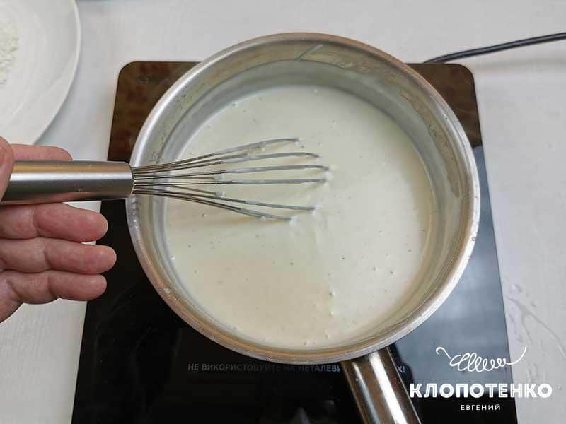
4. Теперь приготовьте соус болоньезе – мясную составляющую нашей лазаньи. Лук (1 шт.) и чеснок (3-4 зубчика) нарежьте мелким кубиком. Припустите на сковороде до мягкости с небольшим количеством оливкового масла.
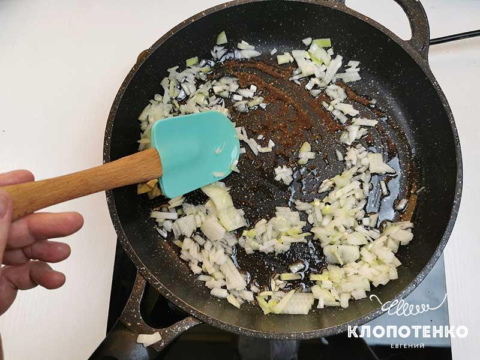
5. Стебли сельдерея (2 шт.) очистите от грубых волокон и нарежьте тонкими слайсами. Добавьте в сковороду к луку и слегка подрумяньте.
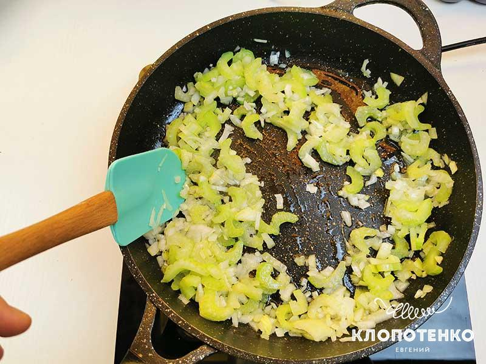
6. Затем добавьте фарш (800-900 г) и, при постоянном помешивании деревянной лопаточкой, разбейте его на маленькие кусочки. Он должен равномерно приготовиться и потемнеть. Добавьте красное сухое вино (100 мл) и выпарите в течение 5 минут. Вино придаст соусу невероятный благородный аромат и вкус.
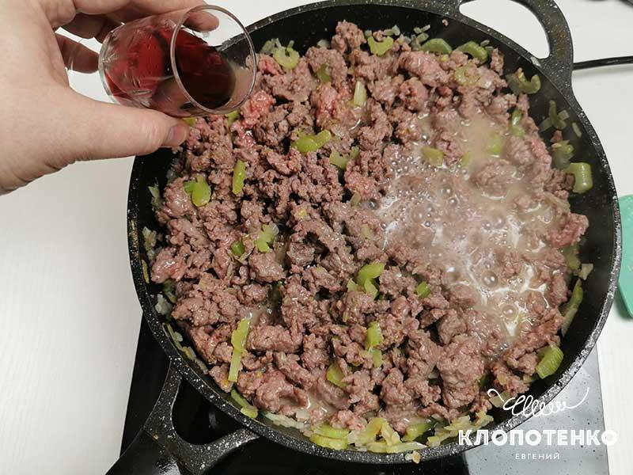
7. Влейте томатный сок (1 стакан) или используйте томатный соус и тушите смесь еще 5-10 минут, чтобы соус упарился вполовину. Доведите до вкуса солью и перцем.
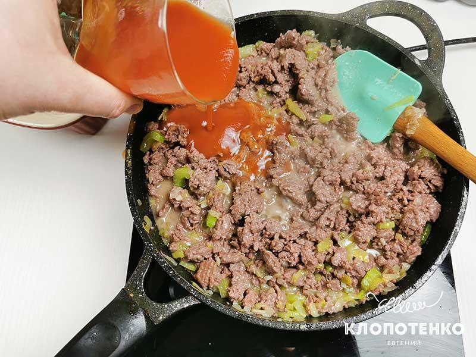
8. Твердый сыр (300 г) натрите на крупной терке и приступайте к сборке лазаньи. Выберите прямоугольную керамическую форму для запекания. Смажьте ее небольшим количеством сливочного масла. По дну формы распределите небольшое количество соуса бешамель.
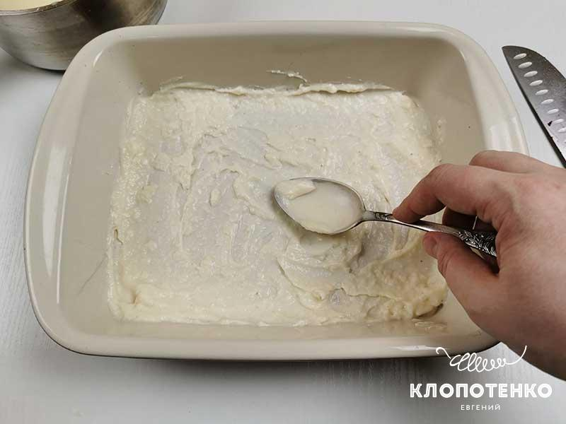
9. Выложите листы лазаньи (всего понадобится 15-16 листов), чтобы они максимально покрыли дно формы. Ничего страшного, если придется положить их с небольшим нахлестом.
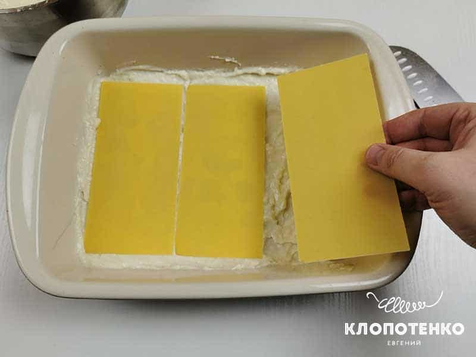
10. Треть соуса болоньезе равномерно распределите по листам лазаньи при помощи ложки или лопатки.
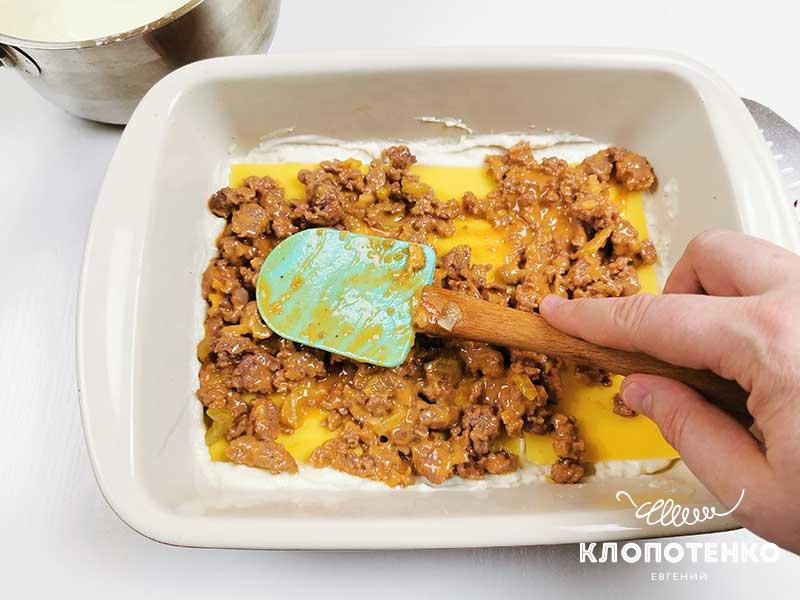
11. Теперь добавьте небольшое количество соуса бешамель. Старайтесь, чтобы он равномерно распределился по всему периметру.
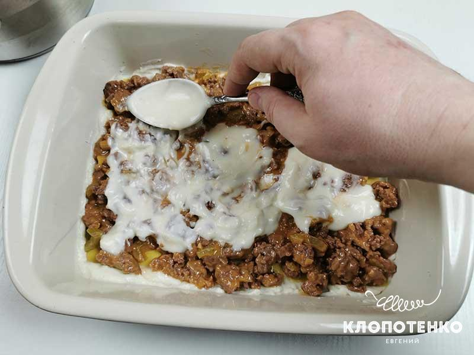
12. Посыпьте третью тертого твердого сыра, так чтобы он тоже равномерно распределился по форме.
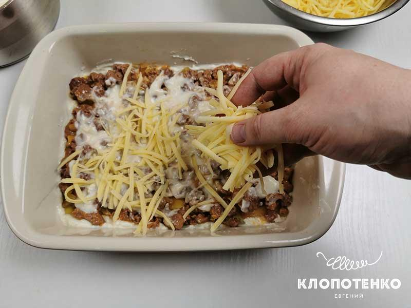
13. Накройте листами лазаньи и повторите процедуру сборки 2-3 раза в зависимости от высоты формы. У меня получилось три полноценных слоя с соусом болоньезе. Последний слой листов лазаньи полейте оставшимся молочным соусом бешамель и посыпьте его пармезаном (70 г), натертым на мелкой терке. Отправьте форму в духовку с температурой 180 градусов на 40-50 минут до появления аппетитной румяной корочки. Я выпекал лазанью на специальном режиме духовки, который так и называется «лазанья». Если такого режима у вас нет, то можете выпекать ее на режиме нижнего нагрева в течение 30 минут, а потом переключить в режим верхнего и нижнего нагрева, чтобы получить золотистую корочку. Горячую лазанью нарежьте порционными кусочками и подавайте к столу с листиками базилика и свежемолотым черным перцем.
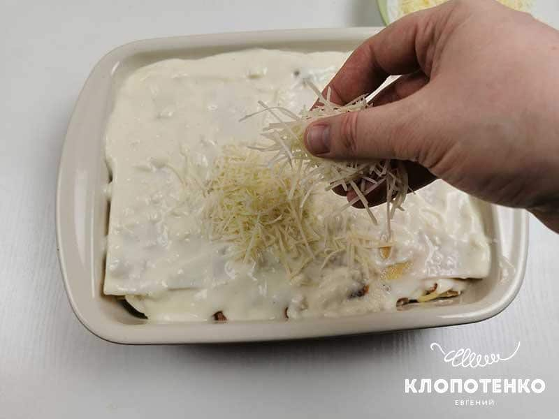

 Время подготовки 30 мин
Время подготовки 30 мин